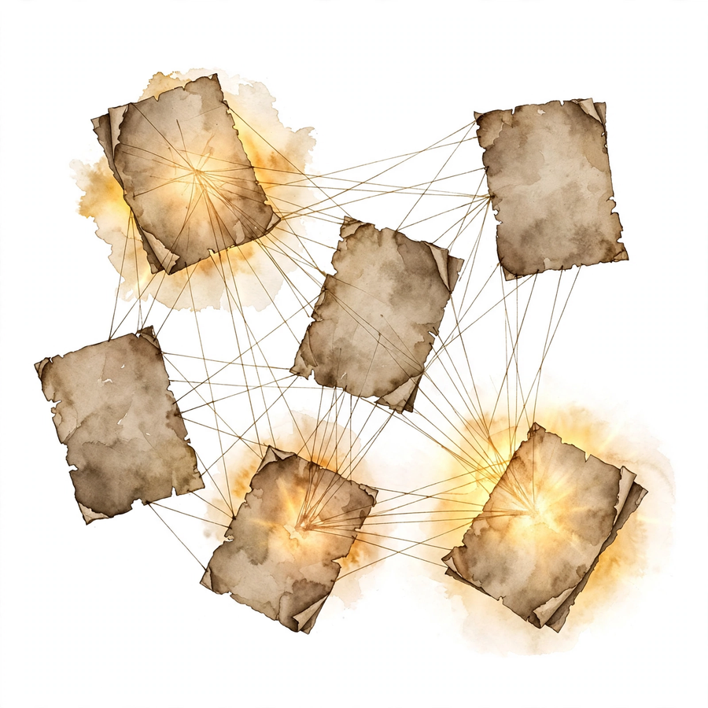

Acquired · Episode 5 · Companion
Google Part I: Origins of Search
Google was not the first search engine. It was the last. A citation-graph insight, a stolen-and-fixed business model, and a $100 million bet the company did not have built the best business in human history. This companion follows the episode chapter by chapter.
Listen. The official Acquired episode audio (about 3 hr 20 min). Times below are proportional estimates from the transcript, which carries no timestamps.
Source fact A claim from the episode transcript. Interpretation My read on what it means. Times marked ~ are proportional estimates from word position, since the transcript has no timestamps.


Not Accidental Billionaires
Source fact The episode opens by killing a myth: the perception that Larry Page and Sergey Brin were hapless academics, weak on business, and that Google was a research project that became the best business of all time by accident. The hosts say that is wrong. Everyone they interviewed in research described the two as hugely ambitious, for the business as well as the product.
Probably when I was 12, I knew I was going to start a company eventually.
Larry Page · Episode ~00:14
Larry's fuller quote: he wanted to make the world better, and to do that you need to do more than just invent things. Later he added that you need to use business and entrepreneurship to make these things real, since it is not enough just to invent them. Ben's reading: companies are the vehicles that bring ideas to the masses.
The timing was extraordinary. From 1993 to 1996, the web grew from 130 sites to more than 600,000, a 723 percent growth rate year over year for four years, per John Battelle's book The Search. Larry and Sergey watched the largest communication phenomenon in history compound in real time, from inside Stanford's computer science department, where they met in the fall of 1995 and argued constantly before becoming true partners.
Links Are Citations
Source fact The core insight came from an old field: the study of academic citations. Scholars had long ranked papers by who cites whom. The leap: a hyperlink is the exact same model as an academic citation. A link from page A to page B is A's vote that B matters. And links carry something citations do not: anchor text, the clickable words the linker chooses, which are usually a better description of the target page than anything the page says about itself. Google's ranking combined the citation graph with anchor-text descriptions, and it worked.
The underpinnings were brutal: crawling the whole web, storing the graph, computing the scores. Larry wrote the first PageRank implementation and crawler in Java. It was super buggy and barely worked. They tried to sell the technology to Yahoo for $1 million. Yahoo said no.
The episode stresses two underappreciated points. Ranking was only one of three innovations. The others were speed and the clean page. And Google's aversion to paid inclusion, refusing to pollute organic results with paid placement, served it enormously. Trust in the results was the product.
The $100,000 Check to a Company That Did Not Exist
Source fact At 8 a.m. one morning, Larry and Sergey demoed Google to Andy Bechtolsheim at Dave Cheriton's house in Palo Alto. Andy was in a hurry. He loved it. He said he was in for $100,000 and went to get the check from his car, though they had only wanted advice, not money. The check was made out to "Google Inc." Google Inc. did not exist. No documents, no valuation. Andy told them to figure it out. That check forced the company's founding.
The full seed round: $1 million at a $10 million post-money valuation, from four investors: Andy Bechtolsheim, Dave Cheriton, Ram Shriram ($250,000), and Jeff Bezos. Bezos asked Ram what he was in for, heard $250,000, and said he was in for $252,000. A quarter of Google's seed round was the Amazon CEO. Ben's math: if Bezos never sold a share, the stake is worth about $20 billion today. If he sold at the IPO, the $250,000 became roughly $200 million.
The $252,000 check
What Jeff Bezos put in, and what the episode says it became. Hover for detail.
Source: Acquired, Google Part I, ~00:42. Ben's math. Bezos never disclosed sales.
Source fact By spring 1998, google.com handled 10,000 queries a day, spreading virally through Stanford. The first revenue was gloriously unglamorous: a $20,000 enterprise search deal with Red Hat. The Series A: $25 million at a $100 million post-money valuation from Sequoia and Kleiner Perkins, wild for the time even in the bubble. A competing $150 million term sheet arrived mid-negotiation. They stayed with Sequoia and Kleiner. That was the goal all along.
The Portal Deals That Bought Survival

Source fact Around the Series A, Larry and Sergey met Omid Kordestani from Netscape. Omid soon went back to his old Netscape and AOL colleagues and landed the portal deals. In June 2000, as the dot-com bubble burst (NASDAQ peaked in March 2000), Google signed Yahoo: Google would power all of Yahoo's organic search with "Powered by Google" branding at the bottom of every page, and Yahoo would invest $10 million. Traffic doubled to 14 million searches a day on day one. The deal and the investment kept the company going through the dot-com winter until the AdWords business model arrived.
2001 numbers: $86 million in revenue, $10 million in profit. Profitable in the nuclear winter of the internet economy, almost entirely on portal deals and the old ad system.
Stealing the Business Model
Source fact The business model came from Bill Gross's GoTo, later Overture: paid search results sold through a self-serve website with a real-time auction, where the highest bid wins the top spot. GoTo did $100 million in revenue in its first year. By mid-1999 it had 8,000 advertisers. AdWords at its October 2000 launch had 350 in beta. When Gross demoed paid results at TED in 1998, the audience booed. The web was still an academic utopia, and paid results felt like sacrilege.
Yahoo ended up buying Overture for $1.6 billion after a bidding war with Microsoft. At one point paid search was about 75 percent of Yahoo's revenue. When Google offered to buy Overture and the board refused to give up 10 percent of a $2 billion company to a zero-revenue startup, Ben's comment stands: there is almost zero chance Google becomes Google if that deal happens.
The Harmonious Auction

Source fact Google's version of the auction ranks ads by bid times expected click-through rate, and charges per click. This aligns every incentive. Advertisers bid only on relevant keywords and write relevant ads, because relevance lowers what they pay. Users see ads they might actually want. Google maximizes its expected value per search. The episode calls it literally the algorithm to maximize Google's expected value, and a harmonious system.
Interpretation The one-line difference between an auction and a good auction is the multiplication by relevance. GoTo rewarded money. Google rewards money times quality, which means quality becomes cheaper than money.
Toy: the auction, one line at a time
Two advertisers compete for one search. Set each bid and expected click-through rate. Google ranks by bid times click-through rate. Watch relevance beat money. Illustrative model.
The $100 Million Google Did Not Have
Source fact By mid-2002 the new AdWords model worked. Google went to AOL, with 34 million users, whose search ran on Inktomi. The deal: a $100 million revenue guarantee to AOL, 85 percent revenue share, plus an option to buy 7.4 million shares at $3 per share, a $22 million investment. Google did not have $100 million. Negotiating in May 2002, with the model just starting to work, Sergey Brin said: We could have gone bankrupt. This is quite literally Google betting the company.
They were certain the ads would perform, because their monetization per search was the best in the industry.
It worked beyond anyone's model. AOL made $35 million in the second half of 2002 alone, then $200 million in 2003, blowing through the guarantee. Google took the inventory straight from Overture and became a major paid-listings player overnight.
The bet, in arithmetic
What Google promised versus what AOL earned. Hover for detail.
Source: Acquired, Google Part I, ~02:11.
Source fact Around the same time, Yahoo offered $3 billion to buy Google. Google countered: how about $5 billion, with the unspoken punchline being that at that price it would be Google buying Yahoo. No deal. It was the last serious acquisition attempt.
The distribution logic behind all of it: whoever monetizes each search best can pay the most for distribution. Google paid everyone to bundle the Google Toolbar: Adobe, RealNetworks, WinZip. Average revenue per user went from $8 toward $10, $20, $30. Toolbar users were stickier. Google Earth shipped with the toolbar bundled and more than paid for itself. The flywheel: better monetization buys more distribution, which brings more users and advertisers, which improves monetization.

AdSense and the End of Trade-offs
Source fact In early 2003, Google launched AdSense: ads on other people's websites, matched to page content. By year end it passed $1 million a day in revenue, a few months after launch. The idea came from Gmail prototyping: Paul Buchheit, in his 20 percent time, built search over his Unix mail folder, then tried showing ads from Google's database against email content. Larry and Sergey saw it and asked: does this work on websites too?
The numbers: 2002 did $440 million in revenue and $185 million in profit, up 5 to 6 times from the $86 million of 2001, while transitioning all of it to the new model. 2003 exploded to $1.5 billion in revenue and almost $350 million in operating income. AdWords stayed an 85-percent gross margin business. AdSense kept only about 20 percent but added half a billion in a year. Ben's line: after roughly the end of 2002, Google never faced a capital constraint again. Every idea could be funded.
The revenue detonation, 2001-2003
Revenue in $ millions. Hover for detail.
Source: Acquired, Google Part I, ~02:38.
Source fact International mattered too: Omid Kordestani spent a year on planes building country teams as tiny startups. International went from 18 percent of revenue to 22 to 29 percent, toward half the business today. China ran until the 2010 withdrawal over censorship, after a fight that started around 2002 to 2004.
The Dutch Auction That Mispriced
Source fact The 2004 IPO used a Dutch auction, where bidders submit price-and-quantity bids and shares sell at the highest price that clears the offering. The indicative range was $108 to $135 a share. It priced at $85: a $23 billion market cap, raising $1.7 billion. It popped to $100 the same day, then compounded to roughly 100 times the IPO market cap by recording, over $2 trillion. The auction was supposed to price perfectly. It did not.
From $23 billion to $2 trillion
Market cap at IPO versus at recording. Hover for detail.
Source: Acquired, Google Part I, ~02:50. Roughly 100x since IPO.
Source fact The episode's sting: at recording, Alphabet traded at a 20 price-to-earnings ratio, an all-time low, and roughly 6 times revenue. Peers: Amazon at 35, Microsoft at 37, Nvidia at 46, Apple at 30, Meta at 27. Revenue grows just as fast as all of them except Nvidia. Ben's read: the market thinks the future is a lot bleaker for Google than for those companies. David's kicker: never mind that Google invented AI and published the transformer paper. That is Episode 4's story.
The market's discount
Price-to-earnings ratios at recording. Hover for detail.
Source: Acquired, Google Part I, ~02:52. The discount is the AI fear, priced.
Gmail: The April Fool's Teaser
Source fact The same month Google filed its S-1 in April 2004, it launched Gmail on April Fool's Day, a terrible date given Google's history of fake April Fool's announcements. The product sounded too good to be true: web-based email with one gigabyte of free storage for every user, when Yahoo and Hotmail offered two megabytes. It came with Google search across all your mail, entirely in the browser. Paul Buchheit, the Gmail engineer, later became a Y Combinator partner and co-founded FriendFeed with Bret Taylor.
Interpretation Ben's strategic point, carried into Part II: what a great reason to be logged into Google, and what a great entry point to attach more of your life to search ads. The inbox was the next distribution surface.
The Seven-Point Playbook
Source fact Ben's seven-point playbook, the episode's capstone. (1) The best original algorithm insight, PageRank, which made the product fast, clean, and delightful. (2) The best execution of the search advertising model, the auction times click-through rate, a harmonious system. (3) Clever infrastructure advantages, first-principles engineering that invented what did not exist. (4) Hiring only world-class people, easy during the crash. (5) Culture, insanely big thinking by inexperienced, untainted people, matched with top PhDs, always asking whether it works at scale. (6) Self-reinforcing data network effects, more users and advertisers making the product better. (7) A mission that lasted, organize the world's information, not too broad, not too narrow, altruistic on the surface, covering the best business ever underneath.
David's closer: 1996 to 2002 rhymes with 2021 to today. Study how search monetization enabled distribution, and you have the template for how AI monetization will enable AI distribution. His provocation: in 1998, paid results in search were sacrilege. What if someone built a chatbot that told you what advertisers paid it to tell you? People would go crazy. But should somebody try it?
The episode in seven lines
- Google was not first. It was last, and best.
- Rank by what others say, not what the owner claims.
- Steal the business model, then fix its one flaw.
- Bid times relevance: make quality cheaper than money.
- Bet the company only on arithmetic you measured.
- Buy the default. Distribution is inventory.
- Scale should grow revenue per user, not just cut costs.
Distilled from Acquired, Google Part I: Origins of Search, Summer 2025. Full episode: youtube.com/watch?v=v1nkN0sM2wc. Times are proportional estimates from the transcript.
Outro
Source fact The episode closes with the sign-off, who got the truth, and the promise of Part II: Gmail, Maps, YouTube, Android, Chrome, and the decade Google shipped everything.